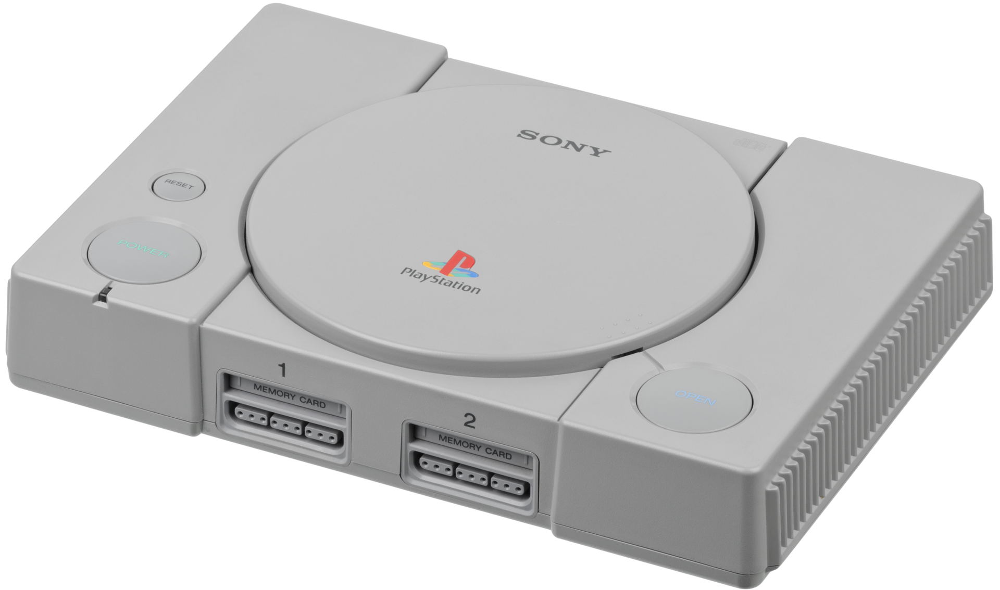

Geschiedenis
De PlayStation werd in 1995 op de Europese markt gebracht en was de eerste spelcomputer die Sony uitbracht. Negen jaar en zes maanden na de introductie was de PlayStation de eerste spelcomputer die 100 miljoen keer verkocht werd. Sony medewerker Ken Kutaragi wordt ook wel de "vader van de PlayStation" genoemd.
Ontstaan
 De PlayStation ontstond door een mislukte samenwerking met Nintendo. Sony en Nintendo hadden een samenwerking gestart om voor de SNES een cd-eenheid te produceren, genaamd de "Play Station" of "SNES-CD". Dit was al in een vergevorderd stadium, totdat Nintendo de samenwerking stopte, omdat de bedrijven niet tot een overeenkomst konden komen over de verdeling van de winst. Nintendo deed Sony nog een aanbod om alleen de hardware te produceren, maar dit werd afgeslagen. Nintendo wendde zich tot Philips wat uiteindelijk resulteerde in de cd-i, terwijl Sony bekendmaakte de cd-eenheid alsnog te zullen uitbrengen. De PlayStation werd in drie versies uitgebracht en was voorzien van een regioslot. Dit had te maken met de televisie-standaard die in deze werelddelen worden gebruikt. De meest gebruikte systemen zijn PAL en NTSC. Na de installatie van een modchip konden er spellen worden gespeeld vanaf cd-r, en spellen uit een andere regio. De voornaamste concurrentie van de PlayStation waren de Nintendo 64, en de Sega Saturn. De PlayStation bezat een marktaandeel van 70,3%. De Nintendo 64 had een marktaandeel van 22,7% en de Saturn moest het doen met 6,8%. De PlayStation heeft het 32/64-bitstijdperk gedomineerd. Dat had onder andere te maken met een lagere prijs voor cd's, in tegenstelling tot de duurdere spelcartridges van de Nintendo 64, en de aanhoudende problemen met de Saturn. Daarnaast omarmde Sony ontwikkelaars van buiten door deze volledig te ondersteunen bij de ontwikkeling voor het platform.